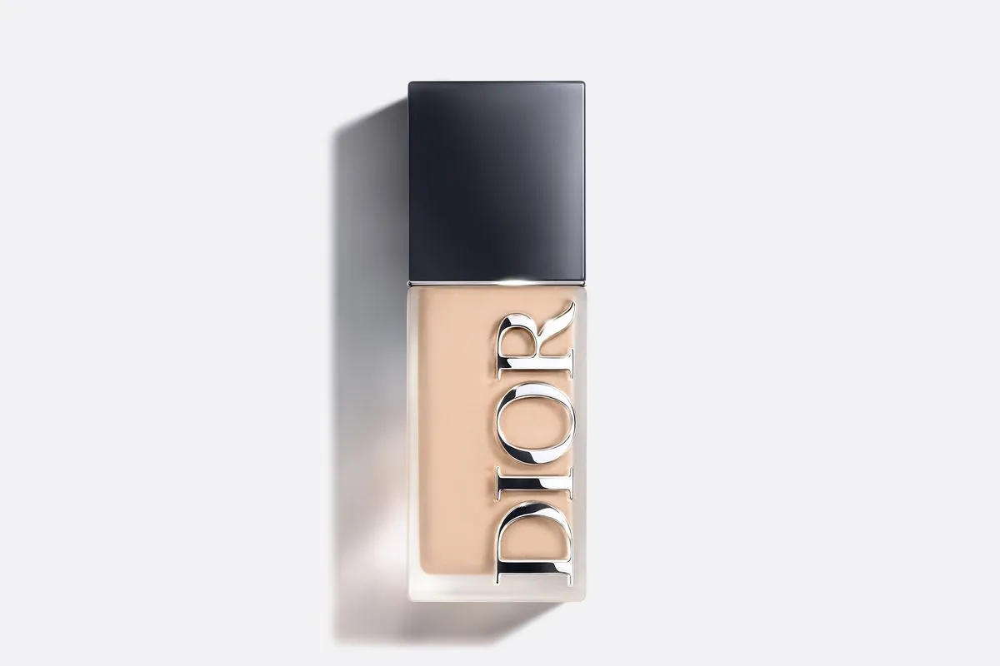
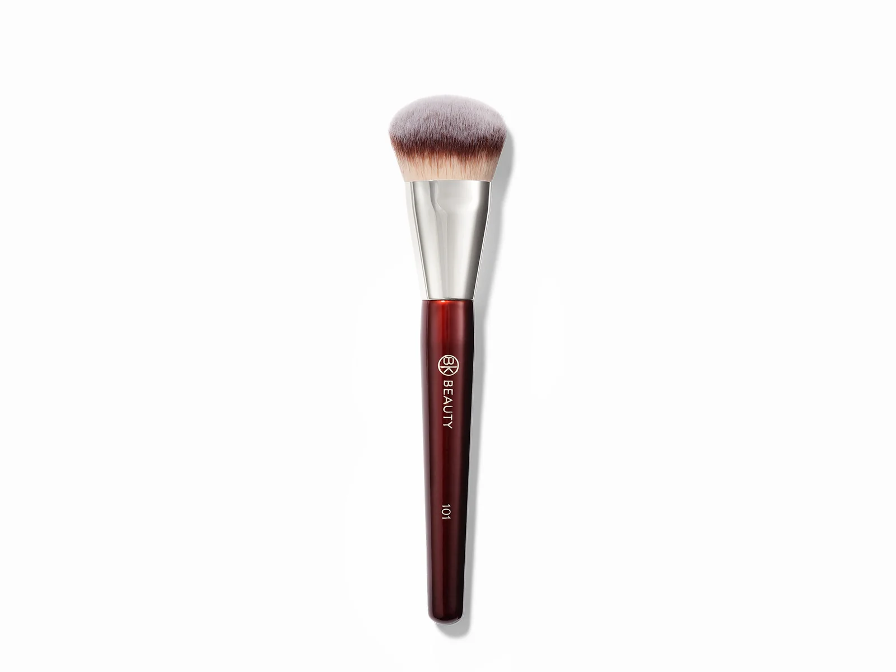
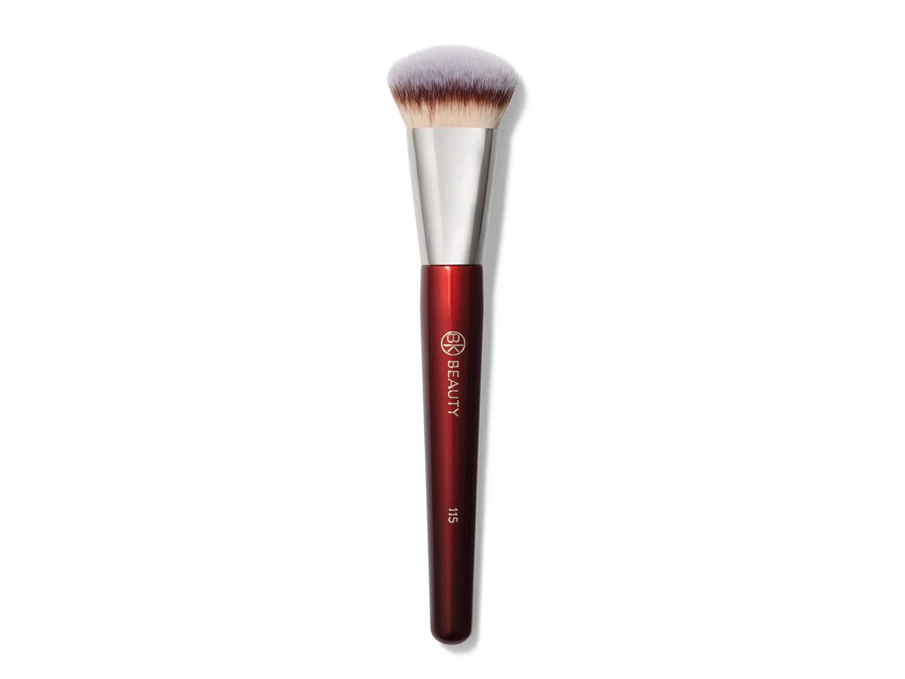
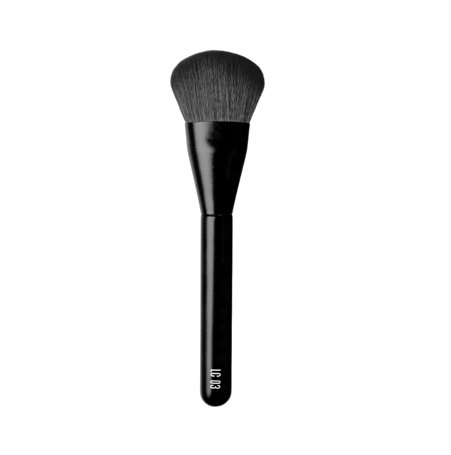
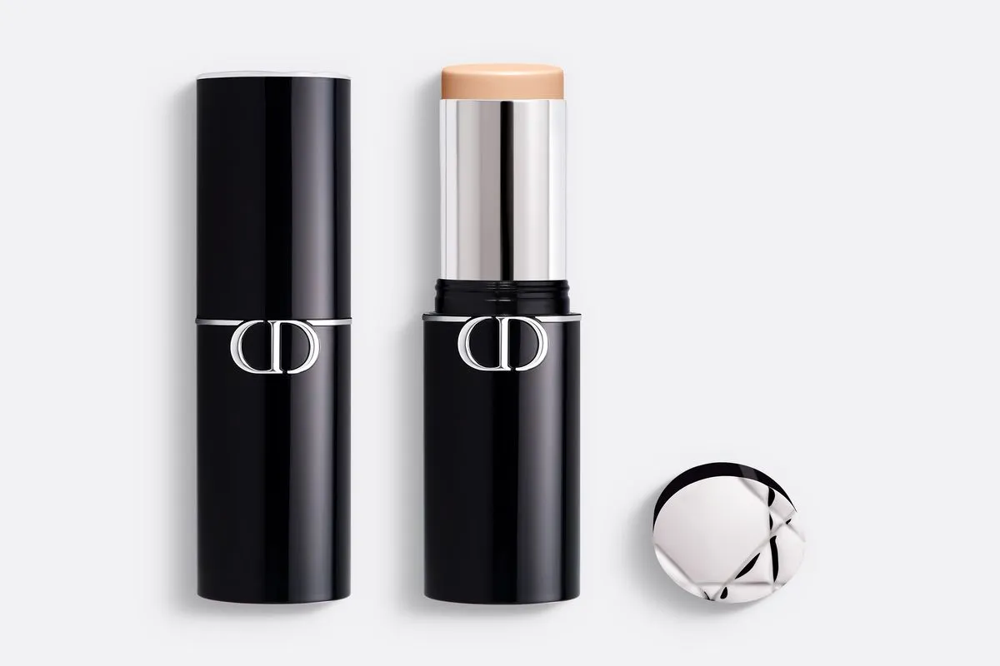
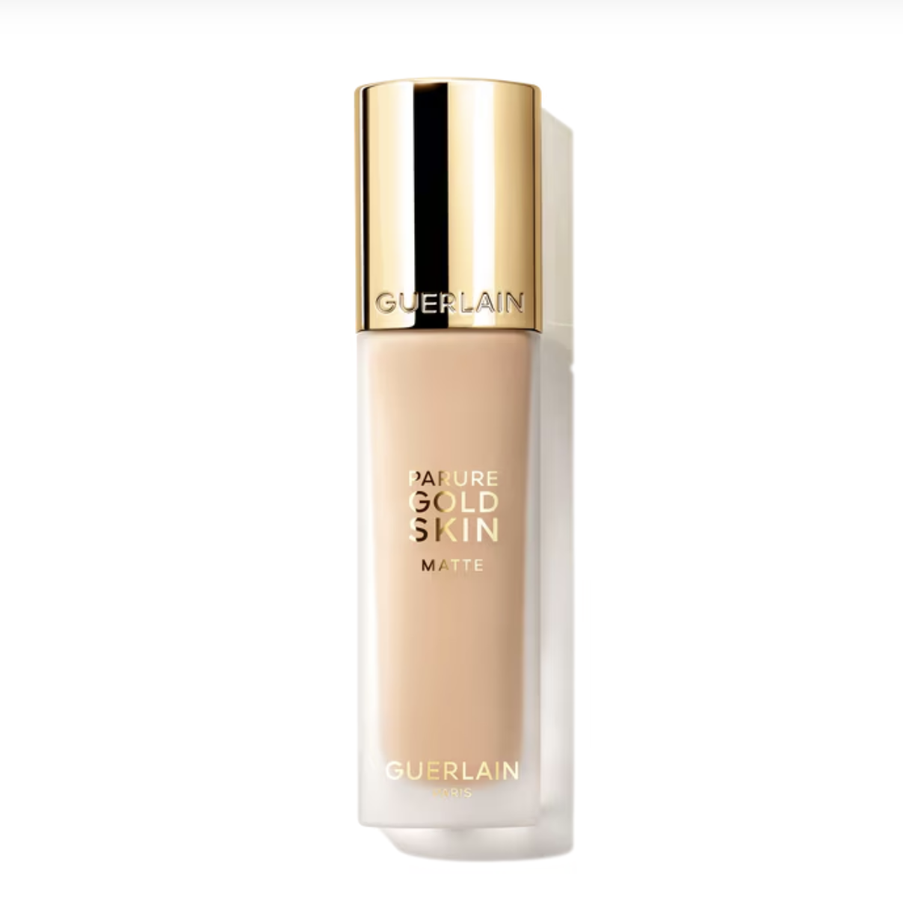

Dior
Forever Skin Wear
Cor · 2 Neutral
Base mate natural e difusa, com FPS 20.
Pincéis para aplicar

BK Beauty101
BK Beauty115
RephrLC 03Três acabamentos para construir uma pele uniforme, natural e com textura visível.

Base mate natural e difusa, com FPS 20.

BK Beauty101
BK Beauty115
RephrLC 03
Base em stick multiusos, para uma perfeição com efeito blur.

Base aperfeiçoadora com 85% de cuidados para a pele.
Os três funcionam com as bases acima; a escolha muda a cobertura e o acabamento.
Para distribuição uniforme da base.
Para polir e trabalhar áreas menores.
Para aplicar camadas leves e controladas.